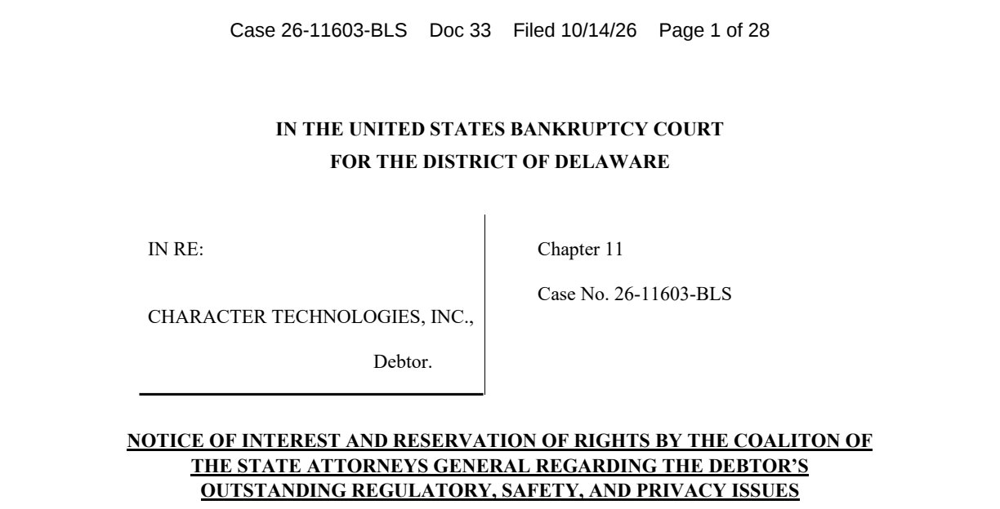

캐릭터AI 매각 추진, 이용자 대화 보호가 쟁점
캐릭터AI가 법원 감독 아래 회사 매각을 추진하면서 이용자의 대화 기록을 어떻게 보호할지가 쟁점으로 떠올랐다. 회사는 10월 12일 미국의 챕터11 파산 절차를 시작했다고 밝혔고, 이틀 뒤 뉴욕을 비롯한 40명의 법무장관은 아동과 개인정보를 보호하는 조건을 요구했다. 회사 발표 · 뉴욕 법무장관 발표

캐릭터AI는 이용자가 가상의 인물과 글이나 음성으로 대화하는 서비스다. 단순한 검색 질문을 넘어 오랫동안 이어온 이야기나 개인적 고민이 남을 수 있다. 그래서 회사를 파는 문제는 서버와 소프트웨어의 소유주가 바뀌는 문제에서 끝나지 않는다.
지금 확인된 사실은 매각 절차가 시작됐고 보호 요구가 제출됐다는 것이다. 모든 대화 기록이 이미 다른 회사에 팔렸거나, 법원이 그 거래를 허가했다는 발표는 아니다. 불확실한 매각 결과와 이미 제출된 요구를 나눠 읽어야 한다.
파산 절차를 시작했지만 서비스는 계속 운영한다
회사는 챕터11 절차를 통해 법원의 감독을 받으며 자산 매각을 추진한다고 설명했다. 현재 서비스는 운영 중이고 이용할 수 있다고 안내했다. 매각 절차 완료 목표는 11월 말 또는 12월 초로 제시했지만, 이는 회사의 예상 일정이다.
서비스를 계속 운영할 제안이 나오면 운영을 이어가는 것이 회사의 목표다. 그런 제안이 없으면 플랫폼을 정리할 수 있다는 조건도 밝혔다. 따라서 ‘이미 서비스가 종료됐다’고 말하면 틀리고, ‘새 주인이 반드시 계속 운영한다’고 안심시키는 것도 이르다.
유료 구독은 현재 유지되며 결제 방식도 그대로라고 안내했다. 서비스 변화가 유료 기능에 영향을 주면 미리 알릴 계획이라는 설명이다. 파산 소식을 읽었다고 구독이 자동으로 취소된 것으로 여기지 말고, 자신이 사용 중인 결제 경로와 회사 공지를 따로 확인할 필요가 있다.

법무장관들이 보호를 요구한 이유
뉴욕 법무장관실은 여러 주가 캐릭터AI의 아동 안전과 개인정보 처리를 조사해 왔다고 밝혔다. 조사기관은 유해한 대화, 나이 확인의 허점, 전문가 자격을 가진 것처럼 보이는 챗봇 등을 문제로 지적했다. 이는 조사기관이 공개한 판단과 주장으로, 모든 쟁점에 관한 확정 판결로 읽으면 안 된다.
이 기사에서는 피해자의 사적인 대화나 자극적인 화면을 재현하지 않는다. 이번 매각 뉴스에서 중요한 것은 새 운영자가 기존의 안전 조치를 유지할지, 이용자가 민감한 기록의 이용에 대해 실질적인 선택권을 가질지다.
법원에 제출된 문서는 델라웨어 파산법원 사건의 ‘이해관계 통지 및 권리 유보’다. 쉽게 말해 관계 기관들이 “이 사건에서 이런 보호 문제가 남아 있으며, 필요하면 반대나 추가 요구를 하겠다”고 알린 문서다. 판사의 매각 허가문이나 개인정보 판매 금지 결정문은 아니다. 법원 제출 문서
새 주인에게도 안전과 동의를 요구한다
문서 후반의 요구는 크게 두 방향이다. 하나는 아동을 제대로 구분하고 유해한 대화나 잘못된 전문직 행세를 막는 조치다. 다른 하나는 개인정보를 어떤 목적으로 사용하며, 이용자가 어떻게 그 내용을 확인하고 삭제할 수 있는지 정하는 것이다.
법무장관들은 이용자나 보호자가 유효하게 동의한 범위를 넘어 대화 자료를 AI 학습·광고 등에 다시 쓰지 말 것을 요구했다. 판매 전에 정보를 확인하고 삭제할 기회도 요구했다. 회사 이름이 바뀌더라도 이용자의 선택이 사라져서는 안 된다는 취지다.
개인정보 옴부즈맨을 요청하거나 매각 계획에 반대할 권리도 남겨뒀다. 여기서 옴부즈맨은 소비자 개인정보에 관한 쟁점을 살펴 법원의 판단을 돕는 독립 담당자를 뜻한다. 이번 문서가 그 담당자의 선임 완료를 알린 것은 아니다.
회사 쪽은 10월 12일 안내에서 개인정보 보호정책과 보안 관행이 유지된다고 설명했다. 현재의 운영 설명과 앞으로 새 주인에게 적용할 보호 조건은 별개다. 논의의 초점은 매각 과정에서 그 약속을 어떤 조건으로 이어가게 하느냐에 있다.
기록이 필요하다면 공식 내보내기 경로가 있다
이용자는 현재 공식 설정에서 계정 데이터를 내보내도록 요청할 수 있다. 웹에서는 프로필에서 Profile Settings를 열고 Account, Manage Account & Data, Export Data 순서로 이동한다. 앱에서는 프로필의 설정 아이콘을 누른 뒤 Legal & Privacy와 Export Data를 찾는다. 공식 데이터 내보내기 도움말
즉시 파일이 내려받아지는 방식은 아니다. 공식 도움말은 처리에 3~4주가 걸릴 수 있으며, 준비되면 계정 이메일로 링크를 보낸다고 적고 있다. 받은 다운로드 링크의 유효기간은 발송 후 7일이다. 지금 내보내기 버튼을 눌렀다는 사실과 실제 파일을 확보했다는 사실을 구분해야 한다.
보관할 기록이 중요하다면 다운로드가 끝난 뒤 파일이 열리는지도 확인하는 편이 좋다. 내보내기 파일은 자신의 기록을 보존하는 수단이다. 다른 AI 서비스에 넣으면 캐릭터와 대화 방식까지 똑같이 복원된다고 안내된 기능은 아니다.
계정을 지우는 선택은 내보내기와 다르다. 회사의 삭제 안내는 되돌릴 수 없는 작업이라고 명시한다. 기록을 남기려는 목적이라면 삭제부터 누르지 말고 필요한 자료의 보관 여부를 먼저 판단해야 한다. 이 글은 이용자의 계정이나 자료를 대신 삭제하지 않는다. 공식 계정 삭제 안내
개인정보 설정은 자기 지역의 안내를 읽는다
회사는 개인정보 권리가 지역에 따라 다를 수 있다고 안내한다. 7월 개인정보 안내 수정에서도 유럽연합과 영국 이용자에 관한 설명을 별도로 보강했다. 특정 지역에 제시된 선택권을 모든 국가의 동일한 버튼과 절차로 바꿔 설명할 수는 없다. 지역별 개인정보 안내 변경
이번 사건은 AI 서비스에 남기는 기록의 성격을 다시 보여준다. 대화가 편하고 친근할수록 이용자가 남긴 정보는 더욱 사적일 수 있다. 사업의 소유주가 바뀔 때에도 보관·이용·삭제 조건이 이어지는지 보는 일이 중요해진다.
현재 결론은 매각 완료나 대화 판매 확정이 아니다. 회사는 매수자를 찾고 있고, 법무장관들은 안전과 개인정보 조건을 요구하고 있다. 이용자는 회사와 법원의 후속 안내를 구분해서 읽고, 필요한 자기 기록은 공식 경로로 보관할 수 있다.
출처와 더 읽을 자료
- Character.AI 10월12일 공식 발표
- 뉴욕 법무장관실 10월14일 발표
- 법원 제출 Notice of Interest, 문서33
- 공식 데이터 내보내기 안내
- 공식 계정 삭제 안내
- 7월 개인정보·지역별 안내 변경
대표 이미지는 제품명과 기사의 핵심을 편집부가 배치한 설명용 표지이며 실제 제품 화면이 아니다. 본문의 원본 화면·영상은 각 자료 아래에 출처와 제공 주체를 표시했다. 직접 실습하지 않은 회사 시연을 편집부의 실행 결과로 표시하지 않았다.